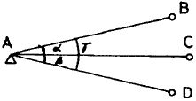
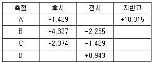
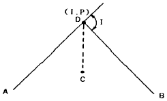

지적기사 (2008-03-02 기출문제)
1과목: 지적측량
1. 지적삼각점을 설치하기 위하여 연직각을 관측한 결과가 최대치는 +1° 26‘ 17“이고, 최소치는 +1° 25’ 37” 였을 때 옳은 것은?
- 최대치를 연직각으로 한다.
- 최소치를 연직각으로 한다.
- 평균치를 연직각으로 한다.
- 연직각을 다시 관측 하여야 한다.
(정답률: 알수없음)

2. 다음 그림의 동일 경중률에 의한 각 관측에서 α+β-γ=-9“일 때 α, β, γ에 대한 각 보정량은 각각 얼마인가?

- α=+4.5‘, β=+4.5“, γ=0”
- α=-4.5‘, β=-4.5“, γ=0”
- α=+3“, β=+3”, r=-3"
- α=+3“, β=+6”, γ=+9“
(정답률: 알수없음)
3. 측판측량방법에 의한 세부측량을 도선법으로 하는 경우의 설명으로 틀린 것은?
- 지적측량기준점 및 명확한 기지점 간을 상호연결한다.
- 도선의 측선장은 도상길이 8cm 이하로 한다.
- 도선의 변수는 20변 이하로 한다.
- 도선의 폐색오차는 √n mm 이하로 한다.(n:변수)
(정답률: 알수없음)
4. 지적삼각점측량시 수평각의 측각공차로 틀린 것은?
- 1방향각에서 30초 이내
- 1측회의 폐색에서 ±30초 이내
- 삼각형내각 관측치의 합과 180° 와의 차에서 ±40초 이내
- 기지각과의 차에서 ±40초 이내
(정답률: 알수없음)
5. 지적삼각보조측량을 다각망도선법에 의하여 시행할 경우 1도선의 점은 몇 점 이하로 하여야 하는가?
- 기지점과 교점을 포함하여 5점 이하
- 기지점과 교점을 포함하여 5점 이하
- 기지점과 교점을 포함하여 15점 이하
- 기지점과 교점을 제외하고 20점 이하
(정답률: 알수없음)
6. 측판측량에서 방사법으로 수평위치를 구하는 경우에 시준오차=0.25mm, 거리 및 축척오차=0.25mm라고 할 때 각 측점의 위치오차는 얼마인가?
- ±0.06mm
- ±0.25mm
- ±0.35mm
- ±0.50mm
(정답률: 알수없음)
7. 다각망도선법에 의하여 지적도근측량을 실시함에 있어 배각법에 의할 때 1배각과 3배각과의 평균값의 교차에 대한 기준은?
- 10초 이내
- 20초 이내
- 30초 이내
- 40초 이내
(정답률: 알수없음)
8. 지적측량에서 망원경을 정ㆍ반으로 수평각을 관측하였을 때 산술평균하여도 소거되지 않는 오차는?
- 편심오차
- 시준축오차
- 수평축오차
- 연직축오차
(정답률: 알수없음)
9. 교회법에 의한 지적삼각보조측량에 관한 설명으로 틀린 것은?
- 관측은 20초독 이상의 경위의를 사용한다.
- 수평각 관측은 2대회 방향관측법에 의한다.
- 연결교차가 0.50미터 이하인 때 평균치로 결정한다.
- 삼각형의 각 내각은 30° 이상 120° 이하로 한다.
(정답률: 알수없음)
10. 경계점좌표등록부에 등록하는 토지의 경계등록방법은?
- 극좌표로 등록한다.
- 평면직각좌표로 등록한다.
- 구면좌표로 등록한다.
- 천문좌표로 등록한다.
(정답률: 알수없음)
11. 지적도면정리에 대한 설명으로 적합한 것은?
- 도면에 등록하는 선은 모두 검은색으로 한다.
- 등록전환으로 인한 등록사항을 말소하는 경우 지목만 말소한다.
- 경계선을 말소하는 경우 짧은 교차선을 1cm 간격으로 제도한다.
- 등록된 토지가 바다로 된 경우에는 지번 및 지목을 말소한다.
(정답률: 알수없음)
12. A점에서 트랜싯으로 B점을 수평으로 시준하여 표척눈금이 4.35m, 기계고가 1.65m이고 AB경사거리가 20m 였다면 AB 두 지점의 수평거리는?
- 19.82m
- 19.92m
- 18.82m
- 18.92m
(정답률: 알수없음)
13. 경위의측량방법에 의한 세부측량에 대한 설명으로 틀린 것은?
- 도선법 및 방사법에 의한다.
- 1방향각의 수평각 측각공차는 40초 이내이다.
- 관측은 20초독 이상의 경위의를 사용한다.
- 연직각 관측은 정반으로 1회 관측하여 그 교차가 5분 이내일 때 그 평균치를 연직각으로 한다.
(정답률: 알수없음)
14. 측량성과와 검사성과의 연결교차의 허용범위로 옳은 것은?
- 지적삼각점-0.30미터 이내
- 지적삼각보조점-0.35미터 이내
- 지적도근점 경계점좌표등록부시행지역-0.15미터 이내
- 경계점 경계점좌표등록부시행지역-0.20미터 이내
(정답률: 알수없음)
15. 지적삼각측량에서 삼각쇄망 오차의 조정계산 순서로 옳은 것은? (단, 1. 삼각조정 2. 변조정 3. 망조정 4. 측점조정)
- 1-2-3-4
- 2-4-1-3
- 4-1-3-2
- 3-2-4-1
(정답률: 알수없음)
16. 지상 1km2의 면적은 도상 4cm2로 표시한 도면의 축척은?
- 1/2,500
- 1/5,000
- 1/25,000
- 1/50,000
(정답률: 알수없음)
17. 축척 1/600 지역에서 도곽선의 신축량이 +2.0mm일 때 최소 단위면적에 영향이 미치지 않는 면적의 한계는?
- 7.1m2
- 8.2m2
- 9.3m2
- 10.4m2
(정답률: 알수없음)
18. 오사오입법의 원칙이 적용되지 않는 것은?
- 방위각의 각치(角鴟)
- 종횡선의 수치
- 연결교차의 결정
- 면적의 결정
(정답률: 알수없음)
19. 경위의측량방법으로 세부측량을 실시하는 경우 축척변경시행지역에 대한 측량결과도의 기본적인 축척은?
- 1/500
- 1/1000
- 1/1200
- 1/6000
(정답률: 알수없음)
20. 다음 중 일반적으로 지적도근측량에서 가장 성과가 좋은 도선은?
- 개방도선
- 왕복도선
- 폐합도선
- 결합도선
(정답률: 알수없음)
2과목: 응용측량
21. 축척 1/50,000 지형도의 등고선 간격에 대한 설명으로 옳은 것은?
- 주곡선 50m
- 간곡선 25m
- 계곡선 100m
- 조곡선 10m
(정답률: 알수없음)
22. 비교적 소축척으로 산지 등의 측량에 이용되는 등고선 측정 방법으로 지성선 상의 중요점의 위치와 표고를 측정하고 이 점으로부터 등고선을 삽입하는 방법은?
- 점고법
- 방안법(사각형분할법)
- 횡단점법
- 종단점법(기준점법)
(정답률: 알수없음)
23. 항공사진에서 사진의 크기와 촬영고도를 같게 할 경우 초광각 카메라에 의한 촬영지역의 면적은 광각 카메라의 경우보다 약 몇 배가 되는가? (단, 초광각 카메라 초점거리=88mm, 광각카메라 초점거리=150mm)
- 1배
- 2배
- 3배
- 4배
(정답률: 알수없음)
24. 지질, 토양, 수자원 및 삼림조사 등의 판독작업에 주로 이용되는 사진은?
- 적외선사진
- 팬크로사진
- 반사사진
- 위색사진
(정답률: 알수없음)
25. 축척 1/10000으로 촬영한 연직사진에서 사진기의 초점거리가 150mm이고 사진의 크기는 23×23cm, 종중복도가 60%일 때 기선고도비는?
- 0.38
- 0.56
- 0.61
- 0.71
(정답률: 알수없음)
26. 터널에서 수준측량을 실시한 야장이 다음과 같을 때 C점의 지반고는? (단, - 부호는 측점이 천정에 설치되어 있으며 단위는 m)

- 5.182m
- 7.764m
- 8.707m
- 11.081m
(정답률: 알수없음)
27. 회전주기가 일정한 인공위성에 의한 원격탐사의 특성을 설명한 것 중 틀린 것은?
- 단시간 내에 넓은 지역을 동시에 측정할 수 있으며 반복관측이 가능하다.
- 회전주기가 일정하므로 원하는 지점을 원하는 시기에 관측하기가 어렵다.
- 관측이 좁은 시야각으로 행해지므로 얻어진 영상은 중심투영에 가깝다.
- 탑재된 자료가 즉시 이용될 수 있으며 재해 및 환경문제 해결에 편리하다.
(정답률: 알수없음)
28. 노선측량에서 고속도로에 많이 사용되는 완화곡선은?
- 3차포물선
- 2차포물선
- 렘니스케이드 곡선
- 클로소이드 곡선
(정답률: 알수없음)
29. 직접수준측량에서 2km를 왕복하는데 오차가 4mm 발생하였다면 이와 같은 정밀도로 하여 4.5km를 왕복했을 때의 오차는?
- 5.0mm
- 5.5mm
- 6.0mm
- 6.5mm
(정답률: 알수없음)
30. 그림에서 ∠ADB의 2등분선 상의 C점을 원곡선의 중점으로 하고자 한다. DC의 길이를 10m로 할 때 원곡선의 반지름은 얼마인가? (단, I=90°임)

- 24.50m
- 24.30m
- 24.24m
- 24.14m
(정답률: 알수없음)
31. 종단곡선에서 상향기울기 4.5/1000, 하향기울기 35/1000인 두 노선이 반지름 2000m의 원곡선 상에서 교차할 때 곡선길이(L)는?
- 49.5m
- 44.5m
- 39.5m
- 34.5m
(정답률: 알수없음)
32. 교점 I.P는 도로기점에서 187.940m의 위치에 있고 곡선반지름 R=250m, 교각 I=43° 57' 20", 현길이=20m의 원곡선에서 접선장(T.L)은?
- 99.922m
- 100.894m
- 102.498m
- 102.849m
(정답률: 알수없음)
33. 축척 1/50000 지형도지역에서 도화구역의 가로, 세로가 각각 20cm×40cm인 지역을 촬영축척 1/20000, 종중복도 60%, 횡중복도 40%, 사진크기 23cm×23cm의 동서코스로 촬영할 때 사진매수는?
- 45매
- 56매
- 63매
- 72매
(정답률: 알수없음)
34. 표고가 동일한 A, B 두지점에서 지구중심방향으로 수갱을 깊이 1000m로 굴착하는 경우에 지표에서 수갱간의 거리가 100m 였다면 지표와 지하에서의 수갱간 거리는 약 얼마의 차이가 발생하는가? (단, 지구의 반지름은 6370km이다.)
- 2cm
- 6cm
- 9m
- 11m
(정답률: 알수없음)
35. GPS의 특징을 설명한 것 중 틀린 것은?
- 고정밀도의 측량이 가능하다.
- 측점간의 상호 시통이 필요하지 않다.
- 측점에서 모든 데이터 취득이 가능하다.
- 날씨에 영향을 많이 받으며 야간관측이 어렵다.
(정답률: 알수없음)
36. 수준측량에 관한 용어 설명 중 잘못된 것은?
- 표고:평균해주면으로부터의 연직거리
- 후시:표고를 결정하기 위한 점에 세운 표척 읽음 값
- 중간점:표고를 알기 위해 전시되는 점으로서, 이 점의 오차는 다른 점에 영향을 미치지 않음
- 시공기면:노선, 매립, 절토, 부지 등의 계획고를 표시하기 위한 기준면
(정답률: 알수없음)
37. 수준측량에서 기포관의 눈금이 3눈금 움직였을 때 60m 전방에 세운 표척의 읽음차가 2.5cm인 경우 기포관의 감도는?
- 26“
- 29“
- 32“
- 35“
(정답률: 알수없음)
38. 다음 중 GPS의 구성체계에 포함되지 않는 부문은?
- 우주부문
- 사용자부문
- 제어부문
- 탐사부문
(정답률: 알수없음)
39. 항공사진에서 계산에 의하지 않고 구할 수 있는 점으로 마주 보는 지표의 대각선이 서로 만나는 점이 그 위치가 되는 것은?
- 특성점
- 연직점
- 등각점
- 주점
(정답률: 알수없음)
40. 지도의 사용목적별 분류가 아닌 것은?
- 일반도
- 주제도
- 특수도
- 편집도
(정답률: 알수없음)
3과목: 토지정보체계론
41. 특별시장ㆍ광역시장 또는 도지사가 시ㆍ도의 지적전산자료를 시ㆍ군의 전산자료와 항상 일치시키기 위하여 재구축을 하여야 하는 기준 시점으로 옳은 것은?
- 매년 말을 기준
- 매반기 말을 기준
- 매분기 말을 기준
- 매월 말을 기준
(정답률: 알수없음)
42. 토지정보시스템의 구성요소에 해당되지 않는 것은?
- 인력 및 조직
- 데이터베이스
- 소프트웨어
- 정보이용자
(정답률: 알수없음)
43. 전산정보처리조직에서 사용자권한등록파일에 등록하는 사용자 권한에 속하지 않는 것은?
- 법인 아닌 사단ㆍ재단 등록번호의 직권수정
- 지적전산코드의 입력ㆍ수정 및 삭제
- 지적공부의 열람 및 등본교부의 관리
- 표준지 공시지가 변동의 관리
(정답률: 알수없음)
44. 지적전산자료의 이용 및 활용에 관한 사항 중 틀린 것은?
- 필요한 최소한도 안에서 신청하여야 한다.
- 지적파일 자체를 제공하라고 신청할 수는 없다.
- 지적공부의 형식으로는 복사할 수 없다.
- 승인받은 자료의 이용ㆍ활용에 관한 사용료는 무료이다.
(정답률: 알수없음)
45. 지적사무전산처리규정의 고유번호 구성에서 대장구분, 본번과 부번의 행정구역 코드의 구성은?
- 대장구분 1자리, 본번 4자리, 부번 4자리
- 대장구분 1자리, 본번 3자리, 부번 3자리
- 대장구분 2자리, 본번 3자리, 부번 4자리
- 대장구분 2자리, 본번 4자리, 부번 3자리
(정답률: 알수없음)
46. 데이터에 대한 정보로서 데이터의 내용, 품질, 조건 및 기타 특성에 대한 정보를 포함하는 정보의 이력서라 할 수 있는 것은?
- 데이터베이스(Database)
- 라이브러리(Library)
- 메타데이터(Metadata)
- 인텍스(Index)
(정답률: 알수없음)
47. 벡터자료(Vector Data)의 장점이 아닌 것은?
- 자료구조의 표현이 용이하다.
- 위상자료구조를 가질 수 있다.
- 정확한 그래픽의 표현이 가능하다.
- 셀 단위로 구성되어 파일 크기가 작다.
(정답률: 알수없음)
48. 데이터베이스관리시스템(DBMS:Database Management System)에 대한 설명으로 틀린 것은?
- DBMS는 물리적인 시스템으로 데이터베이스를 생성ㆍ관리ㆍ제공하는 집합이라고 할 수 있다.
- DBMS는 데이터를 저장하고 정보를 추출할 수 있는 효율적이고 편리한 방법을 사용자에게 제공하는데 목적이 있다.
- DBMS의 주요 기능은 데이터를 안정적으로 관리하고 효율적인 검색 및 데이터베이스의 질의 언러를 지원하는 것이다.
- 파일처리방식에 비하여 시스템구성이 단순해져 자료의 손실 가능성이 적어졌다.
(정답률: 알수없음)
49. 현실 세계의 객체 및 객체와 관련되는 모든 형상의 점, 선, 면을 이용하여 마치 지도상에 나타나는 것과 같이 표현되는 자료는?
- 벡터 자료
- 래스터 자료
- 속성 자료
- 단위 자료
(정답률: 알수없음)
50. 토지정보체계에 대한 설명으로 틀린 것은?
- 토지정보체계는 토지에 관한 정보를 제공함으로써 토지관리는 지원한다.
- 토지정보체계의 유용성은 토지자료의 유연성과 획일성에 중점을 두고 있다.
- 토지정보체계 운영은 자료의 취득과 수집을 포하모하고 그들의 처리, 유지, 검색, 분석, 보급 등도 포함한다.
- 토지정보체계는 정보의 생산자를 위해서라기보다는 사용자의 이익을 위해 설계되었다.
(정답률: 알수없음)
51. 필지중심 토지정보 시스템의 구성내용이 아닌 것은?
- 지적측량 성과작성 시스템
- 지적측량 자료처리 시스템
- 지적공부 관리 시스템
- 지적측량 시스템
(정답률: 알수없음)
52. 다음 중 필지중심토지정보시스템을 나타내는 것은?
- CIS
- NGIS
- PBLIS
- GSIS
(정답률: 알수없음)
53. LIS에서 커버리지(coverage)에 대한 설명으로 옳은 것은?
- 단일주제와 관련된 도형자료만을 의미한다.
- 균등한 특성을 갖는 래스터정보의 기본요소를 의미한다.
- 한가지 주제 또는 형식의 자료로서 공간자료와 속성자료를 갖고 있는 수치지도를 의미한다.
- 업무 활동 모형에서 업무 활동 상호간의 의존성 정도를 의미한다.
(정답률: 알수없음)
54. 공간자료의 입력방법인 스캐닝에 대한 설명으로 옳지 않은 것은?
- 스캐너를 이용하여 정보를 신속하게 입력시킬 수 있다.
- 스캐너는 광학주사기 등을 이용하여 레이저 광선을 도면에 주사하여 반사되는 값에 수치값을 부여하여 데이터의 영상자료를 만드는 것이다.
- 스캐너 영상자료는 GIS 소프트웨어를 이용하여 벡터라이징을 통해 수치지도로 제작된다.
- 스캐닝은 문자나 그래픽 심볼과 같은 부수적 정보를 많이 포함한 도면을 입력하는데 적합하다.
(정답률: 알수없음)
55. 다음 중 공간정보의 편집에서 분리되어 있는 객체를 하나로 합치는 작업은?
- 트림
- 복제
- 익스텐드
- 병합
(정답률: 알수없음)
56. 디지타이징에서 발생하는 오류가 아닌 것은?
- 벡터라이징 오류
- 언더슈트(undershoot)
- 슬리버(sliver)
- 자료중복
(정답률: 알수없음)
57. 도형정보에 관한 설명으로 틀린 것은?
- 지도형상의 수치(좌표)적 설명이다.
- 지도의 특정한 공간적 형상을 설명한다.
- 공간객체의 형상을 시각적인 판단의 근거로 제공한다.
- 지도형상의 특성에 대한 설명정보를 부여한다.
(정답률: 알수없음)
58. 자동 벡터화에 대한 설명으로 틀린 것은?
- 래스터자료를 소프트웨어에 의해 벡터화 하는 것이다.
- 경우에 따라 수동 디지타이징보다 결과가 나쁠 수 있다.
- 자동벡터화 후에 처리결과를 확인할 필요가 있다.
- 위상구조화 작업도 신속하게 이루어진다.
(정답률: 알수없음)
59. 데이터베이스의 일반적인 모형과 거리가 먼 것은?
- 입체형(solid)
- 계급형(hierarchical)
- 관망형(network)
- 관계형(relational)
(정답률: 알수없음)
60. 서로 다른 체계들 간의 자료 공유를 위한 공간자료교환 표준회를 지칭하는 것은?
- DIGEST
- SDTS
- DX-90
- Z39.50
(정답률: 알수없음)
4과목: 지적학
61. 일필지에 대한 다음 설명 중 적당하지 않은 것은?
- 토지의 소유단위
- 토지의 거래단위
- 토지의 등록단위
- 토지의 개발단위
(정답률: 알수없음)
62. 간주지적도에 등록된 토지는 토지대장과는 별도로 대장을 작성하였는데 그 명칭에 해당되지 않는 것은?
- 산토지대장
- 별책토지대장
- 임야토지대장
- 을호토지대장
(정답률: 알수없음)
63. 지적공부로서 지적도가 담당하는 가장 큰 역할은?
- 토지 용도 구분
- 토지 위치 결정
- 토지 이용 현황
- 토지 이동 연혁
(정답률: 알수없음)
64. 지적도나 임야도의 도곽선 역할로 가장 거리가 먼 것은?
- 지적측량기준점 전개시의 기준
- 도곽신축 보정시의 기준
- 도면접합시의 기준
- 토지합병시의 필지결정기준
(정답률: 알수없음)
65. 토지조사사업에 대한 성명으로 잘못된 것은?
- 사업기간은 1910~1918년이다.
- 도면축척은 1:1200, 1:2400, 1:3000이었다.
- 조사측량기관은 임시 토지조사국이었다.
- 사정권자는 임시 토지조사국장이었다.
(정답률: 알수없음)
66. 철도용지와 하천 지목이 수평적으로 중복되는 토지의 일반적인 지목 설정 방법은?
- 등록 선후의 원칙에 따른다.
- 주지목 추종의 원칙에 따른다.
- 경제적 고부가 가치의 용도에 따른다.
- 소관청 담당자의 주관적 직권으로 결정한다.
(정답률: 알수없음)
67. 임야라는 지목의 변천 순서로 옳은 것은?
- 산림산야-산림임야-임야
- 산림임야-산림산야-임야
- 산림산야-산림원야-임야
- 산림원야-산림산야-임야
(정답률: 알수없음)
68. 토지에 대한 물권을 설정하기 위하여 지적제도가 기여해야 할 가장 중요한 역할은?
- 소유권 심사
- 필지 확정
- 지목의 결정
- 지번의 설정
(정답률: 알수없음)
69. 토지등록부의 편성방법 중 물적편성주의에 대한 성명으로 옳은 것은?
- 토지등록의 신청순서에 따라 순차적으로 등록부를 편성
- 토지의 소유자를 중심으로 등록부를 편성
- 연대적편성주의에 인적편성주의를 가미한 방법
- 토지를 중심으로 등록부를 편성
(정답률: 알수없음)
70. 우리나라의 지적공부에 등록해야 할 사항으로 볼 수 없는 것은?
- 토지의 소재
- 평면직각종횡선 좌표
- 소관청의 명칭
- 필지의 경계
(정답률: 알수없음)
71. 최초로 부동산(토지) 등기부를 작성할 때 등기 내용을 확인하는 기초 장부로 사용했던 것은?
- 토지조사부
- 재결조서
- 토지가옥 증명부
- 토지대장
(정답률: 알수없음)
72. 토지조사사업시의 재결기관(裁決機關)은?
- 임시토지조사국장
- 고등토지조사위원회
- 도지사
- 사세청장
(정답률: 알수없음)
73. 조선시대 매매에 따른 일종의 공증제도로 토지를 매매할 때 소유권이전에 관하여 관에서 공적으로 증명하여 발급한 서류는?
- 명문(明文)
- 문권(文券)
- 입안(立案)
- 문기(文記)
(정답률: 알수없음)
74. 택지지역과 같이 도로를 중심으로 한쪽은 홀수, 한쪽은 짝수로 부번하는 방법으로 통신, 방문 등에 편리한 지번 설정방법은?
- 단지식(團地式)
- 사행식(蛇行式)
- 기우식(奇偶式)
- 블록식(Block式)
(정답률: 알수없음)
75. 일반적으로 결번이 생겼을 경우 어떻게 처리하는 것이 옳은가?
- 신규등록시 결번을 사용하여 결번이 없도록 한다.
- 결번된 토지 대장 카드를 삭제한다.
- 결번된 지번을 삭제하고 다른 지번을 설정한다.
- 결번 대장을 비치하여 영구히 보존한다.
(정답률: 알수없음)
76. 토지등록제도의 유형에 포함되지 않는 것은?
- 날인증서 등록제도
- 적극적 등록제도
- 소극적 등록제도
- 임시 등록제도
(정답률: 알수없음)
77. 다음 중 지적의 구성요소를 바르게 나열한 것은?
- 토지, 사람, 측량
- 토지, 등록, 지적공부
- 국토, 권리, 지적공부
- 지적동부, 조사, 측량
(정답률: 알수없음)
78. 현존하는 지적기록 중에서 가장 오래된 것으로 알려진 것은?
- 장적문서
- 매향비
- 경국대전
- 해학유서
(정답률: 알수없음)
79. 근대적인 지적제도의 공시기능이 다른 물권 공시제도의 창설을 가능케 하였는데 이와 관련된 제도는?
- 주민등록제도
- 국토이용통제제도
- 부동산조세제도
- 부동산등기제도
(정답률: 알수없음)
80. 고려시대의 토지제도에 관한 설명으로 틀린 것은?
- 조세징수를 위한 양안과 토지매매를 증명하는 입안제도를 실시하였다.
- 당나라의 토지제도를 모방하였다.
- “도행”이나 “작”이라는 토지 장부가 있었다.
- 사표 제도가 있었다.
(정답률: 알수없음)
5과목: 지적관계법규
81. 토지이동 정리에 따르는 등기촉탁 대상이 아닌 것은?
- 소관청에서 직권으로 등록사항의 오류를 정정한 경우
- 등기부 등본에 의하여 지적공부상 소유권을 정리한 경우
- 행정구역개편으로 인하여 새로이 지번을 설정한 경우
- 소관청이 직권으로 토지이동 내용을 정리한 경우 (단, 신규등록은 제외)
(정답률: 알수없음)
82. 중앙지적위원회의 심의ㆍ의결 사항이 아닌 것은?
- 대한지적공사의 설립허가
- 토지등록업무의 개선
- 지적기술자 양성 방안
- 지적기술자의 징계
(정답률: 알수없음)
83. 다음 중 지적법에 의한 토지등록의 주체는?
- 지적직공무원
- 도지사
- 행정자치부장관
- 국가
(정답률: 알수없음)
84. 지적법에서 규정하고 있지 않은 사항은?
- 토지에 관련된 정보의 조사 및 측량
- 지적공부의 등록 및 관리에 관한 사항
- ㅣ 토지의 소유권 등 권리변경에 관한 사항
- 지적공부에 등록된 정보의 제공이 관한 사항
(정답률: 알수없음)
85. 부동산 등기신청서의 기재사항이 아닌 것은?
- 등기원인과 그 연월일
- 공유물의 지분에 관한 사항
- 지목과 면적
- 등기의 목적
(정답률: 알수없음)
86. 지적법에 규정된 체육용지의 지목에 해당되지 않는 것은?
- 승마장
- 경마장
- 스키장
- 경륜장
(정답률: 알수없음)
87. 토지의 분합, 멸실, 면적의 증감 또는 지목의 변경이 있는 때 그 토지의 소유권의 명기명의인이 등기를 신청해야 할 법정기한으로 맞는 것은?
- 14일 이내
- 15일 이내
- 1월 이내
- 3월 이내
(정답률: 알수없음)
88. 도시기본계획에 관한 설명으로 가장 타당한 것은?
- 광역계획권의 장기발전방향을 제시하는 계획
- 특별시ㆍ광역시ㆍ시 또는 군의 관할구역에 대하여 수립하는 공간구조와 발전방향에 대한 계획
- 특별시ㆍ광역시ㆍ시 또는 군의 개발ㆍ정비 및 보전을 위하여 수립하는 토지이용ㆍ교통ㆍ환경ㆍ경관ㆍ안전ㆍ산업ㆍ정보통신ㆍ보건ㆍ후생ㆍ안보ㆍ문화 등에 관한 계획
- 특별시ㆍ광역시ㆍ시 또는 군의 관할구역에 대하여 기본적인 공간구조와 장기발전방향을 제시하는 종합계획으로서 도시관리계획수립의 지침이 되는 계획
(정답률: 알수없음)
89. 토지이동시 지번부여에 관한 내용으로 틀린 것은?
- 등록전환의 경우에는 원칙적으로 인접지의 최종 본번 다음 숫자의 본번을 계속 부여한다.
- 합병의 경우에는 합병대상 지번 중 선순위의 지번을 그 지번으로 하되, 본번으로 된 지번이 있는 때에는 본번 중 선순위의 자본울 합병후의 지번으로 한다.
- 분할의 경우에는 분할 후의 필지중 1필지의 지번은 분할전의 지번으로 하고, 나머지 필지의 지번은 본번의 최종 이미지와 다음 순서으로 부번을 부여한다.
- 지번은 복사해서 남동으로 순차적으로 부여한다.
(정답률: 알수없음)
90. 지적법규 위반시 과태료 부과처분에 대한 설명으로 맞지 않은 것은?
- 지적법령에 의한 신청의무를 게을리 한 자는 10만원 이하의 과태료에 처한다.
- 과태료 처분에 불복이 있는 자는 처분이 있음을 안 날부터 3개월 이내에 이의를 제기할 수 있다.
- 과태료는 대통령령이 정하는 바에 의하여 행정자치부장관 또는 당해 소관청이 부과ㆍ징수한다.
- 과태료에 대한 이의를 제기한 때에는 행정자치부장관 또는 소관청은 지체 없이 관할법원에 사실을 통보하여야 한다.
(정답률: 알수없음)
91. 축척변경시행공고에 관한 사항에 해당되지 않는 것은?
- 축척변경의 시행지역
- 축척변경의 시행에 관한 세부계획
- 축척변경의 시행에 관한 사업시행자
- 축척변경의 시행에 따른 청산방법
(정답률: 알수없음)
92. 다음 중 지구단위계획의 내용에 포함되지 않는 것은?
- 대통령령이 정하는 기반시설의 배치와 규모
- 건축물의 용도제한
- 환경관리계획 또는 경관계획
- 인구 또는 산업기능 배분계획
(정답률: 알수없음)
93. 지적공부 등록사항의 오류로 면적이 감소되거나 경계가 변동된 때에 정정방법으로 옳은 것은? (단, 이해관계인이 있는 경우)
- 확정판결서 정본에 의해 처리한다.
- 청산금을 산출하여 청산하나.
- 지적공부만 정정한다.
- 소관청 임의대로 처리한다.
(정답률: 알수없음)
94. 토지수용으로 인한 소유권 이전등기에 관한 설명으로 틀린 것은?
- 등기권리자가 단독으로 신청할 수 있다.
- 기업자(企業者)는 상속인에 갈음하여 상속으로 인한 소유권 이전등기를 신청할 수 있다.
- 등기의무자의 권이레 관한 등기필증을 첨부하여야 한다.
- 신청서에 보상 또는 공탁을 증명하는 서면을 첨부하여야 한다.
(정답률: 알수없음)
95. 지적법상 토지 분할신청을 허위로 하였을 경우 벌칙으로 맞는 것은?
- 1년 이하의 징역 또는 500만원 이하의 벌금
- 1년 이하의 징역 또는 1000만원 이하의 벌금
- 2년 이하의 징역 또는 1000만원 이하의 벌금
- 2년 이하의 징역 또는 5000만원 이하의 벌금
(정답률: 알수없음)
96. 지방자치단체의 장이 전국단위의 지적공부에 관한 전산자료를 이용 또는 활용하고자 신청할 경우에 대한 설명으로 옳은 것은?
- 광역시ㆍ도지사의 심사를 받아야 한다.
- 중앙지적위원회의 심사를 받아야 한다.
- 지방지적위원회의 심사를 받아야 한다.
- 관계중앙행정기관의 장의 심사를 받지 않는다.
(정답률: 알수없음)
97. 지적공부에 관한 전산자료를 이용 또는 활용하고자 할 경우 신청서의 기재사랑이 아닌 것은?
- 자료의 안전관리대책
- 지료의 범위 및 내용
- 자료의 제공방식ㆍ보관기관
- 자료를 편집ㆍ가공할 자의 인적사항
(정답률: 알수없음)
98. 소관청이 토지표시의 변경에 관한 등기를 등기관서에 촉탁하고자 할 경우 첨부해야 할 서류에 해당하는 것은?
- 등기촉탁서
- 토지대장 등본
- 임야대장 등본
- 지적도 또는 임야도
(정답률: 알수없음)
99. 축척변경 시행지역내의 토지이동은 언제 있는 것으로 보는가?
- 축척변경 시행공고일
- 청산금 지급완료일
- 축척변경 확정공고일
- 등기 촉탁일
(정답률: 알수없음)
100. 다음 중 국토의 계획 및 이용에 관한 법률상 공동구의 관리자에 해당하는 자는?
- 건설교통부장관
- 행정자치부장관
- 경기도지사
- 서울특별시장
(정답률: 알수없음)
지적삼각점을 설치하기 위해서는 정확한 연직각을 알아야 합니다. 하지만 최대치와 최소치의 차이가 매우 작기 때문에, 이는 측정 오차일 가능성이 높습니다. 따라서 보다 정확한 결과를 얻기 위해서는 연직각을 다시 관측하여야 합니다.